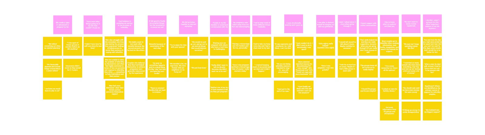

Problem
The growing experience of infertility, has cause a great deal of stress on a couples. The stress itself may interfere with a person’s fertility process and have a negative impact on several facets of their relationship. This is exasperated by ineffective coping strategies.
Research
To fuel all of our insights and design decisions, we started the first five weeks of our project researching the problem we were trying to solve. One problem of the biggest issues we found in our initial research stage which we decided to focus on was that Women who are struggling or unable to become pregnant may also experience disruption in their social relationships, and that infertility should be treated as a couple’s issue, regardless of infertility etiology. Stress is associated with reduced sperm quality in men, and appears to have a modest negative impact on fertility treatment outcome for women. From here, we conducted various methods of research in the first five weeks of our project. This included secondary research, surveys, competitor analyses, as well as user interviews with people who experienced infertility and field experts.

Affinity Insights
- During the infertility treatment, couples collect a lot of stress and don’t know how to manage it
- Females tend to carry a lot more of the pressure
- Infertility can cause a rift between both partners
- Couples consider the fertility process as duty rather than a journey, which makes it unenjoyable
- Male partners feel they are not fully involved within the process
How might we...
- Build a stronger relationship with couples during the infertility process?
- Let the partner feel helpful, and useful during the process of infertility?
- Bridge difficult conversations with their partner, friends and family?
- Facilitate important conversations that are productive and effective?
- Separate the negative feelings of infertility from important parts of their life?


Mid-Fi Prototype
User Flow

Hi-Fi Wireflow

Mobile App
It prompts conversation, keeps track of progress and data, and provides support to the users through social avenues and by curated information. The home screen shows a quick overview of daily sessions, topics and connections. Sessions cover daily topics, conversations, or activities for you and your partner. It also allows users to meet people going through the same thing as them. And prompts the user to learn more about topics they’ve mentioned in session.

Social Robot
Our voice assistant, Clover is a communication mediator and healing tool for couples going through infertility. Clover Uses Machine Learning to learn healthy, and productive conversations methods to better assist their users by facilitating tough conversations. Clover also suggest topics, and activities for the couple, man or woman.
Key Adjectives
- Warm
- Understanding
- Helpful
- Intelligent
- Encouraging
Description
When speaking to our VUI, it responds in an understanding, warm ton to help the user understand they're being heard and listened to. It is intelligent and gives helpful, guided advice. Not overbearing or pushy, but well balanced.
Clover learns responses based off of healthy and productive conversations and language to better respond in sessions.
Voice Chosen
en-TTS US Female 1

Healthy/Productive Conversational Methods:
- Give an appropriate level of detail that the receiver requires
- Do not interrupt each other while they are speaking
- Don’t avoid tough conversations
- Commit to learn from whomever they are conversing with
- Do not do all the talking
- Be a good listener
- Remember key points
- Recognize and mirror other people's feelings, and emotions
Emotions
Because a comforting robot must be perceived as both secure and empathetic, Clover is designed to feel secure, easy to use, and reliable. To be empathetic, it listens, understands, and accommodates for the user. In order to create a social robot, Clover needs to be something people want to interact with. Sympathy towards it is a key point for acceptability. However, it will not be enough to stabilize long-term interaction. Beyond sympathy, we expect the robot to be able to offer empathy to build an effective bridge between the human and the robot. This is why we gave Clover emotions to represent a way to model different responses and thus provide the it with more believable and appropriate responses to the user.